"A vain rental agent wakes up to find his nose cut off. He goes
on a humiliating journey through an indifferent and busy city
to hunt for the man who did this to him.
As his detective journey unfolds, our main character is forced
to confront the absurdity of the urban power structures that he
has privileged from all his life."
Director: Ana Daskalova
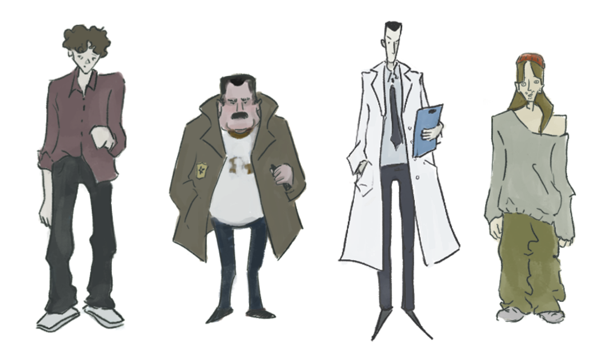
What happens when self-perception replaces self-awareness?
How much of us is invented from the world around us?
Who nose? is less a mystery to be solved than an experience
to be lived. It is a story about lack of authenticity, and the
role of the modern life in shaping our identity.
The story "The Nose" by Nikolaj Gogol is an ideal source
material with its satirical view on society and its existential
absurdity, themes that remain relevant today.
Director: Ana Daskalova
Genre: detective drama with philosophical/satirical elements
Length: animated series 6 ep (10 min each)
Technique: mix of 2D and 3D animation


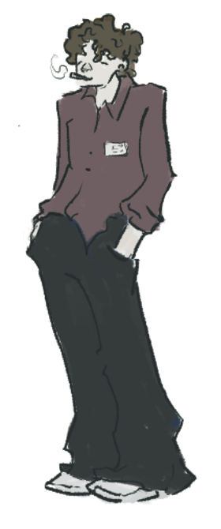

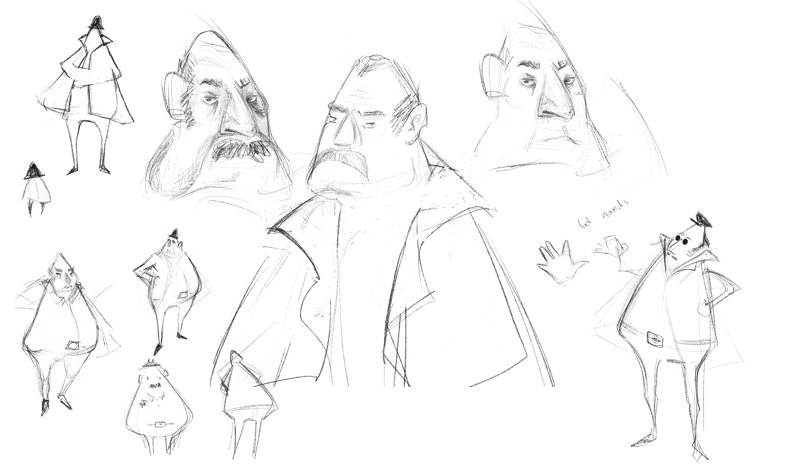
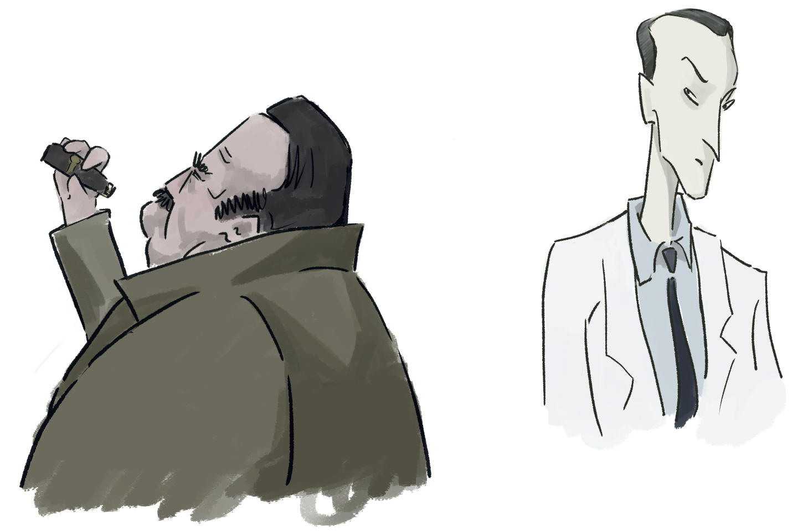
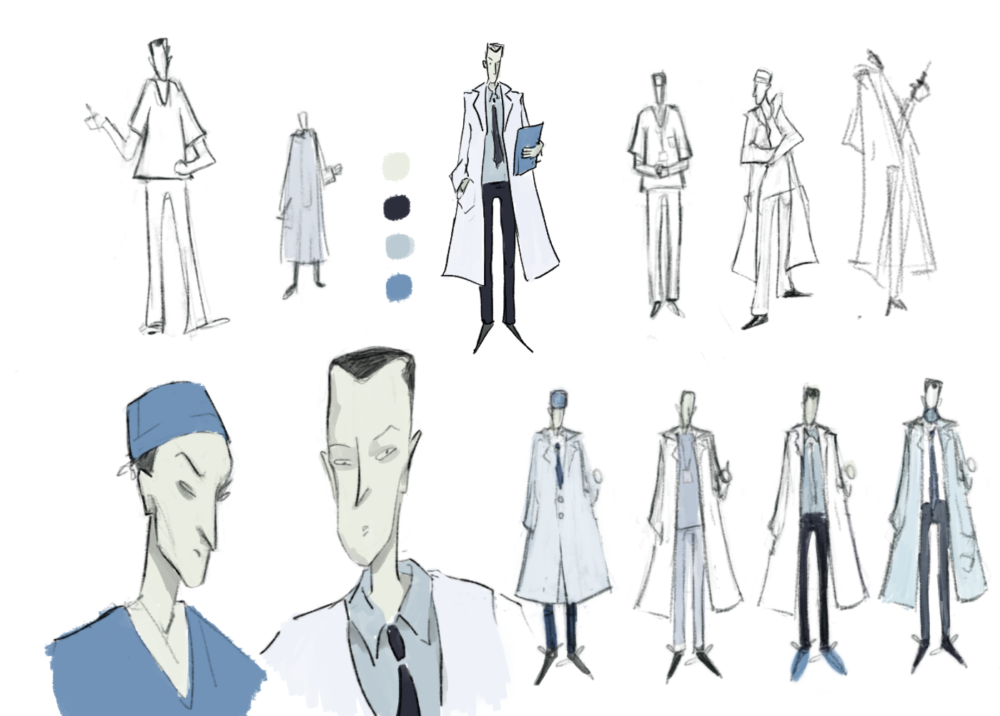
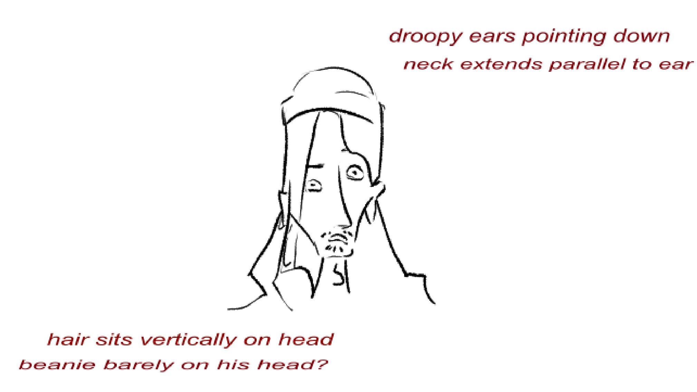
As visual designer, I was very eager to experiment with design choices and techniques and find the most representative way of visually narrating the story. The visual language, which uses a mixed media approach through both 2d and 3d animation, recreates the confusing internal experience of the main character.
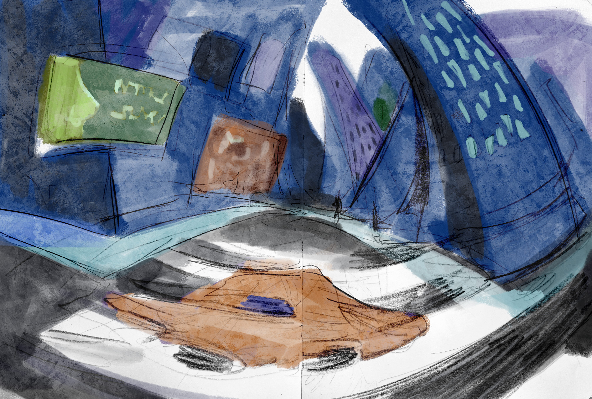
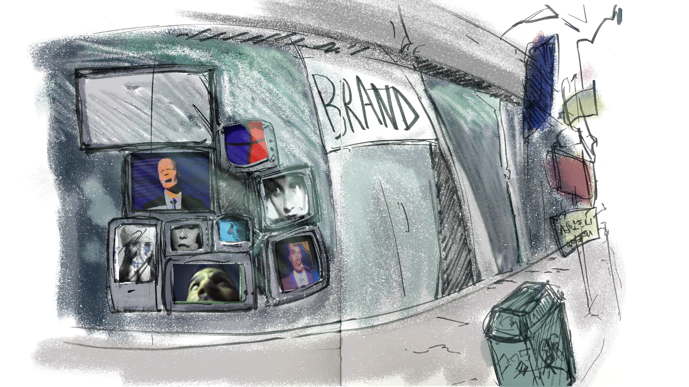
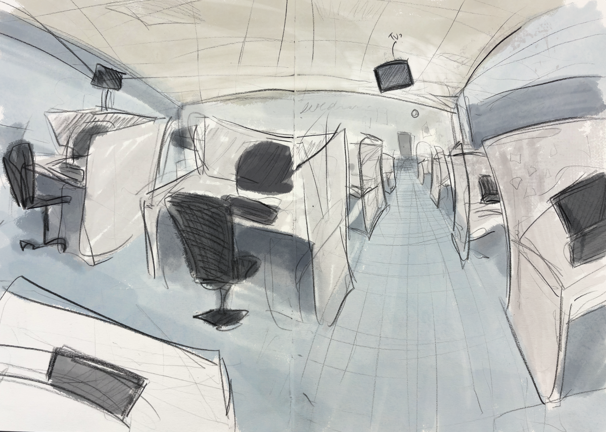
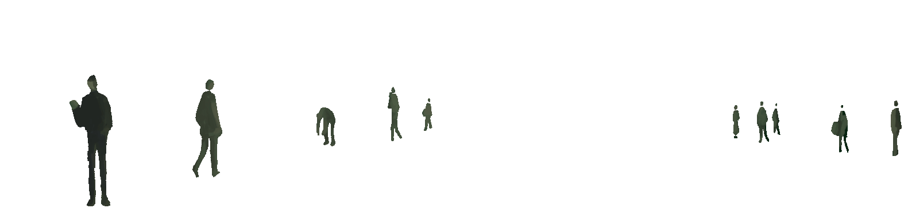
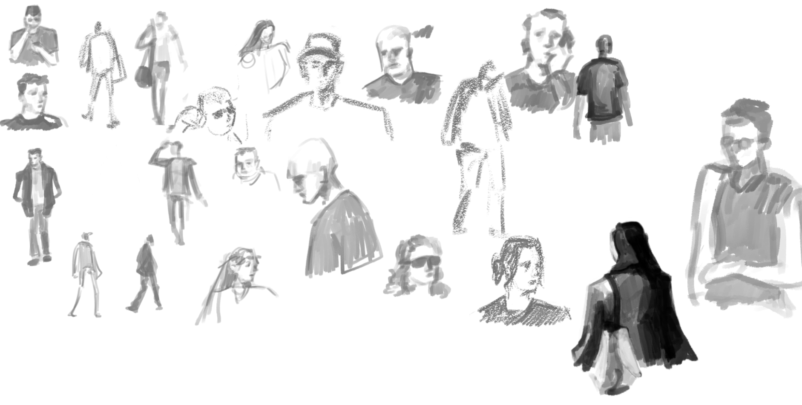
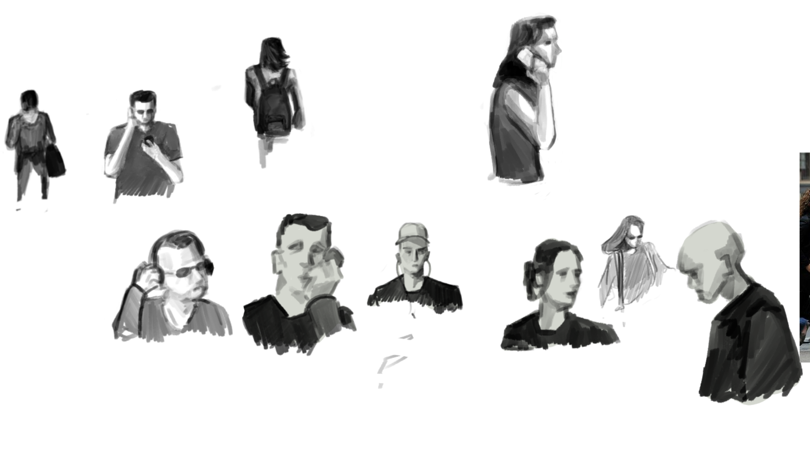


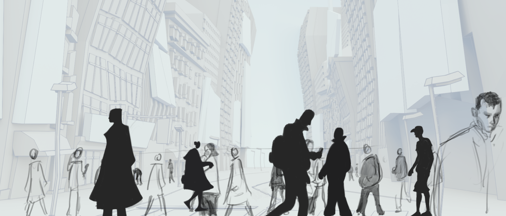